เราสามารถพิสูจน์กรอบการทำงานโดยใช้ข้อสังเกตขั้นต้น สำหรับอุปกรณ์คอขวด 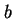 เราจะได้
| (7.61) |
เนื่องจากค่า 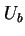 ไม่สามารถมีค่าเกินหนึ่ง
| 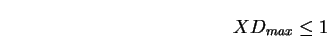 | (7.62) |
หรือ
| 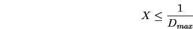 | (7.63) |
ถ้าระบบมีเพียงหนึ่งงานในระบบ จะไม่มีการเข้าคิวเลย เพราะฉะนั้น เวลาตอบสนองของระบบจะเท่ากับผลรวมของความต้องการการบริการ
| 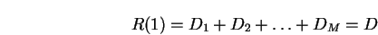 | (7.64) |
ในที่นี้ 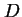 นิยามเป็นผลรวมของความต้องการการบริการในทุกอุปกรณ์ ถ้ามีผู้ใช้งานในระบบมากกว่าหนึ่งคน ความน่าจะเป็นที่ต้องรออยู่ในคิวจะเพิ่มขึ้น เพราะฉะนั้น ค่าเวลาตอบสนองจะสูงขึ้น
| 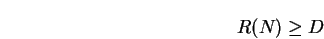 | (7.65) |
ถ้าใช้กฎเวลาตอบสนองที่มีการปฏิสัมพันธ์กับผู้ใช้งานจากสมการ 7.59 และ 7.60 เราจะได้
| 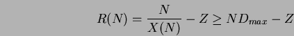 | (7.66) |
และ
| 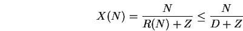 | (7.67) |
รูป 7.4 แสดง Asymptotic Bounds สำหรับกรณีทั่วไป ดังแสดงในรูป กรอบของอัตราความสำเร็จ และเวลาตอบสนอง ถูกกำหนดด้วยเส้นตรงสองเส้น กรอบของเวลาตอบสนองประกอบด้วยเส้นในแนวนอนที่ 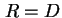 และเส้นที่ผ่านจุด 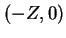 โดยมีความชันเท่ากับ 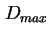 ส่วนกรอบของอัตราความสำเร็จประกอบด้วยเส้นในแนวนอนที่ 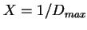 และเส้นที่ผ่านจุดกำเนิด  โดยมีความชันเท่ากับ 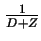 จุดตัดของเส้นเรียกว่า ``จุดการเปลี่ยนแปลง'' หรือ 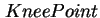 สำหรับทั้งเวลาตอบสนอง และอัตราความสำเร็จ จุดการเปลี่ยนแปลงเป็นจุดที่เกิดขึ้นที่จำนวนผู้ใช้งานจำนวนเท่ากัน จำนวนผู้ใช้งาน 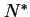 มีค่าเท่ากับ
โดยมีความชันเท่ากับ 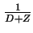 จุดตัดของเส้นเรียกว่า ``จุดการเปลี่ยนแปลง'' หรือ 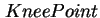 สำหรับทั้งเวลาตอบสนอง และอัตราความสำเร็จ จุดการเปลี่ยนแปลงเป็นจุดที่เกิดขึ้นที่จำนวนผู้ใช้งานจำนวนเท่ากัน จำนวนผู้ใช้งาน 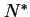 มีค่าเท่ากับ
| 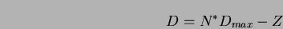 | (7.68) |
ถ้าจำนวนผู้ใช้งานมีค่ามากกว่า เราสามารถพูดได้ว่ามีการรอคิวในระบบ
การใช้ Asymptotic Bounds ในการอธิบายจะช่วยได้มากสำหรับการอธิบายผลการประเมินให้ผู้ที่ไม่มีพื้นฐานทางด้านทฤษฎีคิว หรือการประเมินประสิทธิภาพ
| 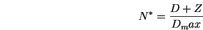 | (7.69) |
![\includegraphics[width=3.8in]{fig/asympbound.eps}](img470.png)